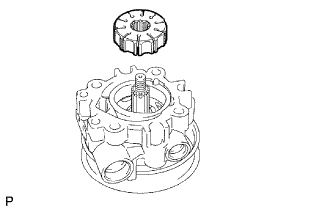

BƠM TRỢ LỰC > LẮP RÁP |
| 1. LẮP PHỚT DẦU VỎ BƠM TRỢ LỰC |
Dùng SST và máy ép, ép phớt dầu mới vào.
| 2. LẮP TRỤC CÓ PULI |
Bôi dầu trợ lực lái lên trục.
Quấn băng dính lên phần có ren của trục.
Lồng từ từ trục bơm trợ lực vào.
| 3. LẮP TẤM BÊN PHÍA TRƯỚC CỦA BƠM TRỢ LỰC |
 |
Bôi dầu trợ lực lên gioăng chữ O số 2.
Lắp gioăng chữ O số 2 vào vỏ phía trước.
 |
Bôi dầu trợ lực lên gioăng chữ O số 1.
Lắp gioăng chữ O số 1 vào tấm bên phía trước.
Lắp tấm bên phía trước vào vỏ phía trước trong khi gióng thẳng rãnh cắt hình bán nguyệt của cả hai chi tiết.
| 4. LẮP VÀNH CAM BƠM TRỢ LỰC |
Với dấu dập hướng lên trên, hãy lắp vành cam bơm trợ lực vào vỏ phía trước của bơm trong khi gióng thẳng các rãnh hình bán nguyệt của cả hai chi tiết.
| 5. LẮP RÔTO BƠM TRỢ LỰC |
|  |
Lắp rôto bơm trợ lực vào vỏ phía trước của bơm.
Bôi dầu trợ lực lên 10 cánh bơm trợ lực.
Lắp 10 cánh bơm.
| 6. LẮP PHANH HÃM TRỤC BƠM TRỢ LỰC |
Dùng một tô vít và kìm tháo phanh, lắp phanh hãm mới vào trục có puli
| 7. LẮP VỎ PHÍA SAU CỦA BƠM TRỢ LỰC LÁI |
Bôi dầu trợ lực lái lên gioăng chữ O mới và lắp nó vào vỏ phía sau.
Gióng chốt thẳng của vỏ phía sau với các lỗ được tạo ra bởi rãnh cắt hình bán nguyệt của vành cam, tấm bên phía trước và vỏ phía trước bơm. Sau đó lắp vỏ phía sau của bơm bằng 4 bu lông.
| 8. KIỂM TRA TẢI TRỌNG BAN ĐẦU |
 |
Kiểm tra rằng bơm quay êm không có tiếng kêu bất thường.
Lắp tạm thời bu lông sửa chữa.
Dùng cờlê cân lực, kiểm tra mômen quay của bơm.
| Hạng mục | Khuyên dùng |
| Đường kính ren | 10 mm (0.39 in.) |
| Bước ren | 1.25 mm (0.0492 in.) |
| Chiều dài bu lông | 50 mm (1.97 in.) |
| 9. LẮP CÔNG TẮC ÁP SUẤT DẦU TRỢ LỰC LÁI |
Bôi dầu trợ lực lái lên gioăng chữ O mới và lắp nó vào công tắc áp suất dầu.
Lắp công tắc áp suất dầu vào cụm bơm trợ lực lái.
| 10. LẮP VAN ĐIỀU KHIỂN LƯU LƯỢNG |
Bôi dầu trợ lực lên lò xo nén và van điều khiển lưu lượng.
Lắp lò xo nén.
Lắp van điều khiển lưu lượng theo đúng hướng lắp.
Bôi dầu trợ lực lái lên gioăng chữ O mới và lắp nó vào cút cổng cao áp.
Lắp cút nối cổng cao áp.
| 11. LẮP CỤM BÌNH CHỨA DẦU BƠM TRỢ LỰC LÁI |
Bôi dầu trợ lực lái lên gioăng chữ O mới và lắp nó vào bình chứa của bơm trợ lực.
Lắp cụm bình chứa bơm trợ lực vào bơm trợ lực bằng 3 bu lông.
| 12. LẮP NẮP BÌNH CHỨA DẦU BƠM TRỢ LỰC |